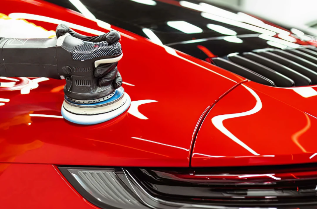

Restauración de Focos
Recuperamos la claridad y apariencia original de los focos de tu vehículo.
01
Especialistas en limpieza profunda, corrección de pintura, restauración de focos y tratamientos cerámicos.
Recuperamos la claridad y apariencia original de los focos de tu vehículo.
01Eliminación de rayones leves y recuperación del brillo original de la pintura.
02Protección avanzada y duradera para la pintura de tu vehículo.
03Limpieza interior y exterior completa, dejando tu vehículo impecable.
04En JV Car Detailing nos dedicamos al cuidado estético automotriz, ofreciendo servicios profesionales de limpieza, restauración, corrección y protección para mantener cada vehículo en las mejores condiciones posibles.
Trabajamos con productos de calidad profesional y brindamos atención personalizada a cada cliente, porque sabemos que tu vehículo merece lo mejor.
Conocer MásContáctanos y solicita tu cotización personalizada.